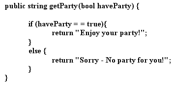
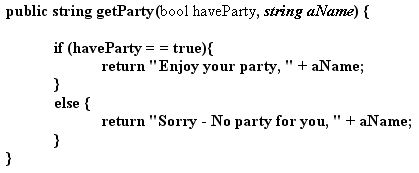
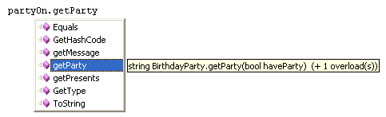
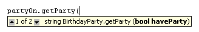
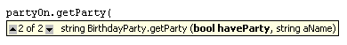
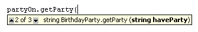

Method Overloading in C# .NET
<< Part of an ongoing lesson - first part is here >>
Something else that you can do with classes is called Method Overloading. This is when you want a slightly different version of a Method. It's part of another Object Oriented concept called Polymorphism.
As an example, take the Method in our derived class. This one:

All this does is to return a string, depending on whether the haveParty variable is true or false. But what if you wanted a different version of the message, if you wanted to add the person's name as well, for example? That's where Method Overloading comes in.
The easiest way to do it is to simply copy and paste the Method you have. To Overload it, you just add more parameters. Compare this version of the getParty Method:

In between the round brackets of getParty, we've added a second parameter:
string aName
And in the Method body, the message that gets returned is slightly different.
When we come to use our getParty Method from the button, look what happens:

The Method is showing up on the IntelliSense list. The tool tip is telling us that the Method has 1 overload.
As soon as you type the first round bracket, the Method options, the overloads, show up:

In between the up and down arrows, it says 1 of 2. This means that there are two version of the getParty method. Press the down arrow to see the second one:

The first version is our original, with one argument. The second version is the new one, with two arguments.
When you overload a method, it takes the same return type (public string, public int, public float, etc). It's the parameters in between the round brackets that change. In the second version of our method, the first parameter is a bool, and the second parameter is a string. But you could have this instead:
public string getParty( string aName )
So we still have one parameters, but the type of variable is a string instead of a bool. This is enough to set up a third overloaded method:

We now have 2 of 3 between the up and down arrows - our new overloaded method has been added to the list.
Overloading can come in very handy if you want slight different versions of a Method - just change the parameter list.
Before we leave classes, we'll examine a simpler way to create classes. It's not recommend that you create all your classes like this though! So, in the final part of this section, we'll take a look at Static Methods.